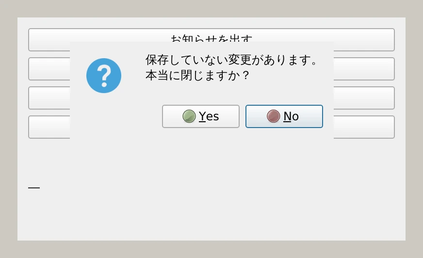
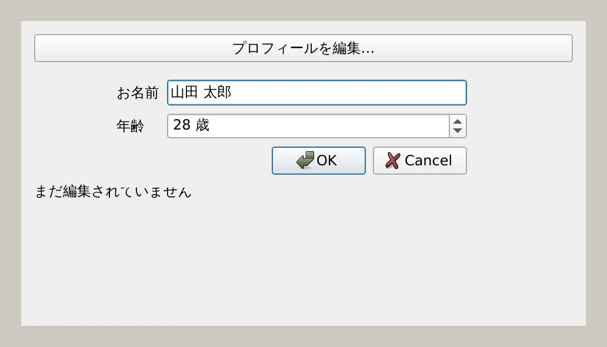

第 8 章·読了目安 12 分
第8章 ダイアログ — 確認・入力・ファイル選択
メッセージボックスとファイル選択は 1 行で呼べます。自作ダイアログと、モーダル／モードレスの違いまで押さえます。
「本当に削除しますか？」「ファイルを選んでください」。 こういう小さな窓を、Qt は最初から用意しています。 自分で作る必要があるのは、独自の入力フォームが要るときだけです。
1 行で呼べる標準ダイアログ
"""QMessageBox と QFileDialog — 1 行で呼べる標準ダイアログ。実行: python ch08_messagebox.py"""import sysfrom PySide6.QtWidgets import (QApplication, QFileDialog, QInputDialog, QLabel, QMessageBox, QPushButton, QVBoxLayout, QWidget)class Demo(QWidget): def __init__(self): super().__init__() self.setWindowTitle("標準ダイアログ") self.resize(400, 230) self.result = QLabel("―") layout = QVBoxLayout(self) info = QPushButton("お知らせを出す") info.clicked.connect(self.show_info) layout.addWidget(info) ask = QPushButton("はい / いいえ を聞く") ask.setObjectName("askButton") ask.clicked.connect(self.ask) layout.addWidget(ask) pick = QPushButton("ファイルを選ばせる") pick.clicked.connect(self.pick_file) layout.addWidget(pick) text = QPushButton("文字列を入力させる") text.clicked.connect(self.ask_text) layout.addWidget(text) layout.addWidget(self.result) def show_info(self): QMessageBox.information(self, "お知らせ", "処理が完了しました。") self.result.setText("お知らせを表示しました") def ask(self): # 戻り値は「どのボタンが押されたか」。 answer = QMessageBox.question( self, "確認", "保存していない変更があります。\n本当に閉じますか？", QMessageBox.StandardButton.Yes | QMessageBox.StandardButton.No, QMessageBox.StandardButton.No, # 既定で選ばれるボタン ) chosen = "はい" if answer == QMessageBox.StandardButton.Yes else "いいえ" self.result.setText(f"「{chosen}」が選ばれました") def pick_file(self): # 戻り値は (選ばれたパス, 選ばれたフィルタ) のタプル。 path, _ = QFileDialog.getOpenFileName( self, "ファイルを選ぶ", "", "テキスト (*.txt *.md);;すべて (*)") self.result.setText(path or "選択はキャンセルされました") def ask_text(self): # 戻り値は (入力された文字列, OK が押されたか) のタプル。 text, ok = QInputDialog.getText(self, "入力", "お名前は？") self.result.setText(f"入力: {text}" if ok else "入力はキャンセルされました")app = QApplication(sys.argv)demo = Demo()demo.show()sys.exit(app.exec())お知らせ・警告・エラー
QMessageBox.information(self, "お知らせ", "処理が完了しました。")QMessageBox.warning(self, "注意", "上書きされる可能性があります。")QMessageBox.critical(self, "エラー", "ファイルを開けませんでした。")
第 1 引数は親ウィンドウです。これを正しく渡すと、
ダイアログが親の中央に出て、親の操作をブロックしてくれます。
None でも動きますが、変な位置に出るので必ず渡してください。
はい / いいえ を聞く
answer = QMessageBox.question( self, "確認", "保存していない変更があります。\n本当に閉じますか？", QMessageBox.StandardButton.Yes | QMessageBox.StandardButton.No, QMessageBox.StandardButton.No, # 既定で選ばれているボタン)if answer == QMessageBox.StandardButton.Yes: ...
if answer == QMessageBox.Yes: ...if answer == QMessageBox.StandardButton.Yes: ...
Qt6 の PySide6 では列挙型が本物の Python の Enum になりました。
そのため「途中まで」の書き方は原則できません。
古い記事のコードで AttributeError が出たら、まずここを疑ってください。
ファイルを選ばせる
# 開く（1 つ）path, _ = QFileDialog.getOpenFileName( self, "ファイルを選ぶ", "", "テキスト (*.txt *.md);;すべて (*)")# 開く（複数）paths, _ = QFileDialog.getOpenFileNames(self, "複数選ぶ")# 保存先を決めるpath, _ = QFileDialog.getSaveFileName(self, "名前を付けて保存", "無題.txt")# フォルダを選ぶfolder = QFileDialog.getExistingDirectory(self, "フォルダを選ぶ")
getOpenFileName() が返すのは
(選ばれたパス, 選ばれたフィルタ) のタプルです。
path = QFileDialog.getOpenFileName(...) と書くと、
path にタプルが入ってしまい、後で「ファイルが見つからない」と言われます。
かならず 2 つで受け取ってください（使わないほうは _ で捨てます）。
また、キャンセルされたときは空文字列が返ります。
if not path: return のチェックを忘れずに。
文字列や数値を入力させる
text, ok = QInputDialog.getText(self, "入力", "お名前は？")num, ok = QInputDialog.getInt(self, "入力", "個数", value=1, minValue=1, maxValue=99)item, ok = QInputDialog.getItem(self, "選択", "色は？", ["赤", "青", "緑"])
こちらも戻り値はタプルで、2 つめの ok が「OK が押されたか」です。
自分でダイアログを作る
入力項目が 2 つ以上あるなら、QDialog を継承して自分で作ります。
"""自作ダイアログ — QDialog を継承して、入力を受け取る窓を作る。QDialogButtonBox を使うと、［OK］［キャンセル］の並び順をOS の作法に合わせて自動で決めてくれる。実行: python ch08_custom_dialog.py"""import sysfrom PySide6.QtWidgets import (QApplication, QDialog, QDialogButtonBox, QFormLayout, QLabel, QLineEdit, QPushButton, QSpinBox, QVBoxLayout, QWidget)class ProfileDialog(QDialog): def __init__(self, parent=None): super().__init__(parent) self.setWindowTitle("プロフィールの編集") self.setMinimumWidth(320) self.name = QLineEdit("山田 太郎") self.age = QSpinBox() self.age.setRange(0, 120) self.age.setValue(28) self.age.setSuffix(" 歳") form = QFormLayout() form.addRow("お名前", self.name) form.addRow("年齢", self.age) buttons = QDialogButtonBox( QDialogButtonBox.StandardButton.Ok | QDialogButtonBox.StandardButton.Cancel) # accept() / reject() は QDialog が最初から持っているスロット。 buttons.accepted.connect(self.accept) buttons.rejected.connect(self.reject) layout = QVBoxLayout(self) layout.addLayout(form) layout.addWidget(buttons) def values(self) -> tuple[str, int]: """呼び出し側が結果を取り出すための窓口。""" return self.name.text(), self.age.value()class Main(QWidget): def __init__(self): super().__init__() self.setWindowTitle("自作ダイアログを呼ぶ") self.resize(480, 260) self.label = QLabel("まだ編集されていません") button = QPushButton("プロフィールを編集…") button.setObjectName("openButton") button.clicked.connect(self.edit_profile) layout = QVBoxLayout(self) layout.addWidget(button) layout.addWidget(self.label) def edit_profile(self): dialog = ProfileDialog(self) # exec() は「閉じられるまでここで待つ」。戻り値で OK かどうかが分かる。 if dialog.exec() == QDialog.DialogCode.Accepted: name, age = dialog.values() self.label.setText(f"{name}（{age} 歳）に更新しました") else: self.label.setText("編集はキャンセルされました")app = QApplication(sys.argv)main = Main()main.show()sys.exit(app.exec())
覚えることは 3 つだけです。
| もの | 役割 |
|---|---|
QDialogButtonBox | OK / キャンセルを、OS ごとの正しい順序で並べてくれる |
accept() / reject() | QDialog が最初から持っているスロット。閉じて結果を返す |
exec() | ダイアログを開き、閉じられるまで待つ。戻り値で結果が分かる |
OK とキャンセルの並び順は OS によって逆です。
Windows は［OK］［キャンセル］、macOS は［キャンセル］［OK］。
自分で QHBoxLayout に並べると、どちらかの OS で不自然になります。
QDialogButtonBox はこれを自動で吸収してくれます。
モーダルとモードレス
ダイアログの開き方には 2 種類あります。この違いは重要です。
モーダル exec() | モードレス show() | |
|---|---|---|
| 親ウィンドウの操作 | できない | できる |
| コードの流れ | その行で止まって待つ | すぐ次の行へ進む |
| 結果の受け取り | 戻り値で分かる | シグナル（accepted など）で受け取る |
| 向いている場面 | 確認、設定、必須の入力 | 検索パネル、ツールパレット |
self.finder = FindDialog(self) # ★ self に持たせるself.finder.accepted.connect(self.on_find_accepted)self.finder.show()「閉じてよいか」を確認してから閉じる
未保存の変更があるときに、閉じる操作を引き止めたいことがあります。
closeEvent を上書きして、event.ignore() を呼ぶと閉じるのを止められます。
def closeEvent(self, event): if not self.is_dirty: super().closeEvent(event) return answer = QMessageBox.question( self, "確認", "保存していない変更があります。閉じますか？", QMessageBox.StandardButton.Yes | QMessageBox.StandardButton.No, QMessageBox.StandardButton.No) if answer == QMessageBox.StandardButton.Yes: super().closeEvent(event) else: event.ignore() # 閉じるのを取り消すch08_custom_dialog.pyのダイアログに「メールアドレス」の欄を足す。- 名前が空のまま OK が押されたら、
QMessageBox.warning()を出して閉じないようにする（ヒント:accept()を上書きして、条件を満たすときだけsuper().accept()を呼ぶ）。
この章のまとめ
- 確認・ファイル選択・簡単な入力は
QMessageBox/QFileDialog/QInputDialogで 1 行。 - 第 1 引数の親ウィンドウは必ず渡す。位置とブロックの挙動が正しくなる。
QFileDialogの戻り値はタプル。キャンセル時は空文字列。- 自作ダイアログは
QDialog＋QDialogButtonBox＋accept()/reject()。 exec()は待つ、show()は待たない。モードレスは参照を残す。